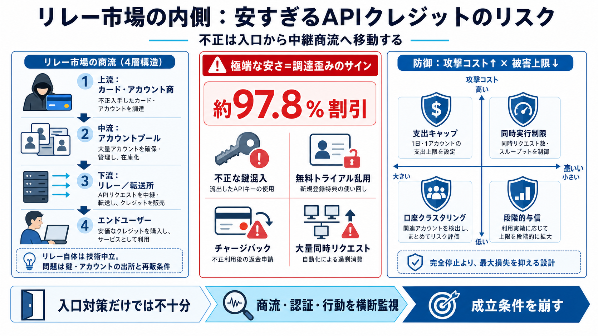

How to Prevent API Abuse for SaaS and AI Platforms | Stripe
Highlights Automated scripts can hit your backend endpoints directly, which can create expensive problems before sta…

リレー市場の内側
生成AI APIクレジットの“安さ”を起点に、不正が商流（リレー）で増幅される構造と、現実的な防御の考え方を整理します。
価格が安すぎる
KYCや不正検知が強まっても、不正は「入口」ではなく「中継の商流」に移って継続し得ます（いたちごっこ）。
極端な割引（実効単価が大幅に低い）
攻撃者は別経路へ移動しながら悪用を継続
商流の四層
リレー（proxy/transfer station）は、利用者のリクエストを大手モデル提供者のAPIへ転送し、“安いゲートウェイ”として提供する仕組みです（必ずしも違法ではない）。
カード・アカウント商（課金チェックを回避しうる供給）
アカウントプール（キー/レート制限・フェイルオーバーを束ねる）
リレー/転送所（中国語サービスとして課金・請求・サポートを担当）
エンドユーザー（開発者/SaaS/蒸留 distillation目的の事業者）
97.8%割引の示唆
最安リレーでは公式価格から約97.8%割引の水準が示され、単なる価格競争より「盗難/漏洩した鍵」や「不正なアカウント混入」を疑う根拠になります。
割引が大きすぎる → コスト構造の異常
利益より「調達コスト/認証コストの歪み」
ソフトは中立
多くのリレーはOpenAI互換のオープンソースゲートウェイ（one-api / new-api）上に構築されていますが、問題は「鍵・アカウントの出所」と「再販条件」です。
ゲートウェイ実装そのものは正当な運用が可能
盗難/漏洩/不正調達された認証情報を含み、規約に反して転売する
悪用パターン
リレー市場では複数の悪用が混ざり、無料トライアル乱用から決済のコスト破壊まで広がります（“まとめて処理される”のが特徴）。
無料トライアルの大量自動登録
利用後のチャージバック
事前チャージ型のカード（前払いの歪み）
ガードレールのないチャットボット経由
“財布を焼く” Denial of wallet：大量同時リクエストでコストを消費
チャージバックとトライアル乱用は混在し得る
入口より“中継”
KYCや不正検知は入口を狭めますが、市場（リレー商流）が分厚いほど、攻撃者は別の調達・代理経路へ“移動”できます。
KYC強化・認証強化で“最初の通過”は難しくなる
商流側の鍵調達/プール/転送体制が“出口”を保つ
成熟市場の兆候
価格比較、アフィリエイト、APIキーの日替わり抽選のような宣伝・誘導があり、リレーが個別事件ではなく継続的な商流になっていることが示唆されます。
価格比較サイト・アフィリエイト
“日替わり抽選”のような仕掛け
複数層が兼任し、市場の境界が曖昧になりやすい
フォーラム内で用語や手口が語られる
攻撃の流れ
防御は“完全停止”ではなく、攻撃成立条件を崩し、被害上限を設計する発想が中心になります。
口座作成（攻撃者の参入）
検知（異常な行動・支出・同時性を見つける）
被害対応（支出上限・与信の制御）
見逃し前提で“最大損失”を抑える
二軸で守る
参入コストを上げる（摩擦や制限）と同時に、被害が出ても支出が致命的にならない設計を組み合わせます。
口座作成の難化、決済の監視、行動パターン監視
支出キャップ、予約枠、同時実行制限、段階的与信
リスク上昇時に追加チェック（CAPTCHA等）
誤検知を減らしつつ“止めるより制御”へ寄せる
“検知すべき差”
one-api / new-api のようなゲートウェイ自体を排除するより、どの認証情報が裏付けとして使われ、トラフィックがどう振る舞うかを監視する方が筋が良いです。
鍵/アカウントの出所、認証の整合性、再販の形跡
支出異常、クラスタ性（口座クラスタリング）、同時性
核心の一文
“供給網（キー調達/再販条件）”と“利用行動（支出・同時性・クラスタ性）”が結びついた瞬間に、リスクは顕在化します。
ゲートウェイ実装（中立にも見える）
盗難/漏洩/不正調達の混入・規約違反の再販
無料トライアル乱用、チャージバック、Denial of wallet
価格だけで判断せず、横断的なリスク管理へ
優先アクション
まずは被害の天井（上限）を作り、その上で参入コストと検知を強めるのが堅実です。
被害上限：支出キャップ / 同時実行制限 / 予約枠
参入コスト：口座作成・決済・行動の監視と摩擦追加
相関検知：口座クラスタリング / 支出異常アラート / レート制限
段階的与信：リスク上昇時に与信を細らせる
最後に
KYCが強まっても不正は移動し得るため、入口対策だけで終わらず、リレー商流と利用行動を横断して“成立条件を崩す”設計が必要です。
proxy / transfer station（リレー）・token resale（トークン転売）・Denial of wallet（財布を焼く）
one-api / new-api（OpenAI互換ゲートウェイ）と、鍵・アカウント調達/再販の切り分け
支出キャップ、予約枠、同時実行制限、口座クラスタリング、支出異常検知、段階的与信
Highlights Automated scripts can hit your backend endpoints directly, which can create expensive problems before sta…
server. Same OpenAI compatible format, same model name, same feeling of, "Hey, I hacked the system. Nice." But now your …
OpenAI # API Organization Verification Learn how to verify your API organization ## What is API Organization Verifica…
Though the sound of a chipmunk rattling off megabytes of AI corruption nonsense would be amusing. The first time. These …
Now Wikipedia is laying out its guidelines for AI developers and providers, saying that generative AI developers should …